In this homework I built the core pieces of a small geometric modeling tool. In Section I, I implemented de Casteljau's algorithm, first to evaluate 2D Bezier curves one level at a time, and then to evaluate Bezier surfaces by running the 1D algorithm along the rows of a control grid and then across the results. In Section II, I worked with triangle meshes stored in a half-edge data structure: I computed area-weighted vertex normals for smooth shading, implemented edge flips and edge splits, and combined them into Loop subdivision, which turns a coarse mesh into a smoother, denser one.
The biggest thing I learned is how much care pointer-based mesh operations need. Drawing every element before and after an operation and writing out a full pointer table before coding made flips and splits much easier to get right, and testing operations in combination was the only way to catch bugs that a single operation hid. I also found it interesting how simple local rules, repeated linear interpolation for curves and neighbor averaging for meshes, produce smooth global shapes, and how much the result depends on the starting triangulation, as the cube experiments in Part 6 show.
De Casteljau's algorithm evaluates a Bezier curve at \( t \in [0, 1] \) by repeated linear interpolations, given \( n\) control points, \( p_0, \dots, p_{n-1} \), one step of the algorithm lerps every pair of adjacent points. The formula for lerp is given as: \[ p_i' = \text{lerp}(p_i, p_{i+1}, t) = (1 - t)\,p_i + t\,p_{i+1} \] This produces \(n - 1 \) new intermediate points. Repeating it on the new intermediate points we get \( n - 2 \) points and so on. The final point is exactly the point on the Bezier curve at parameter \( t \). Geometrically, each level cuts of the corners of the previous control polygon and if we sweep \( t \) from 0 to 1 we can trace out the whole curve.
I implemented one level of this recursion in the BezierCurve::evaluateStep. This function takes in a vector of
\( n \) 2D points, loops over the \( n - 1 \) adjacent pairs, then lerps each pair using the member variable \( t \). It then pushes the result
into the new vector of \( n - 1 \) points in order. The function only performs a single level, since the viewer calls it repeatedly, storing
each intermediate level so that each one can be drawn when stepping through the levels.
To test it, I created my own degree-5 curve with 6 control points (bzc/my_curve.bzc). The screenshots
below step through every level of evaluation at \( t = 0.5 \), the 6 original control points, then 5, 4, 3 and 2
intermediate points, and finally the single evaluated point in red. The full curve
passes exactly through that red point, starts and ends at the first and last control points, and stays
within the convex hull of the control polygon, as expected of a Bezier curve.
|
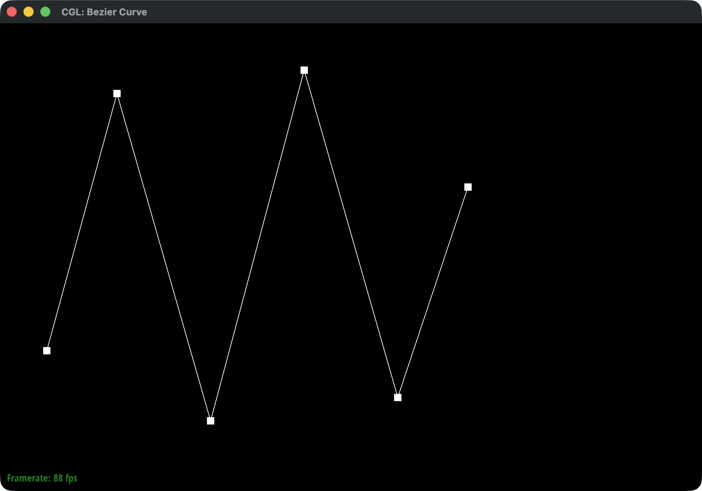 |
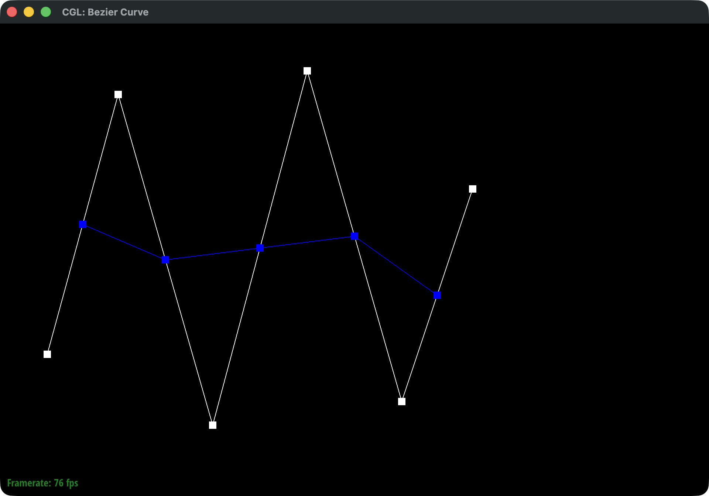 |
|
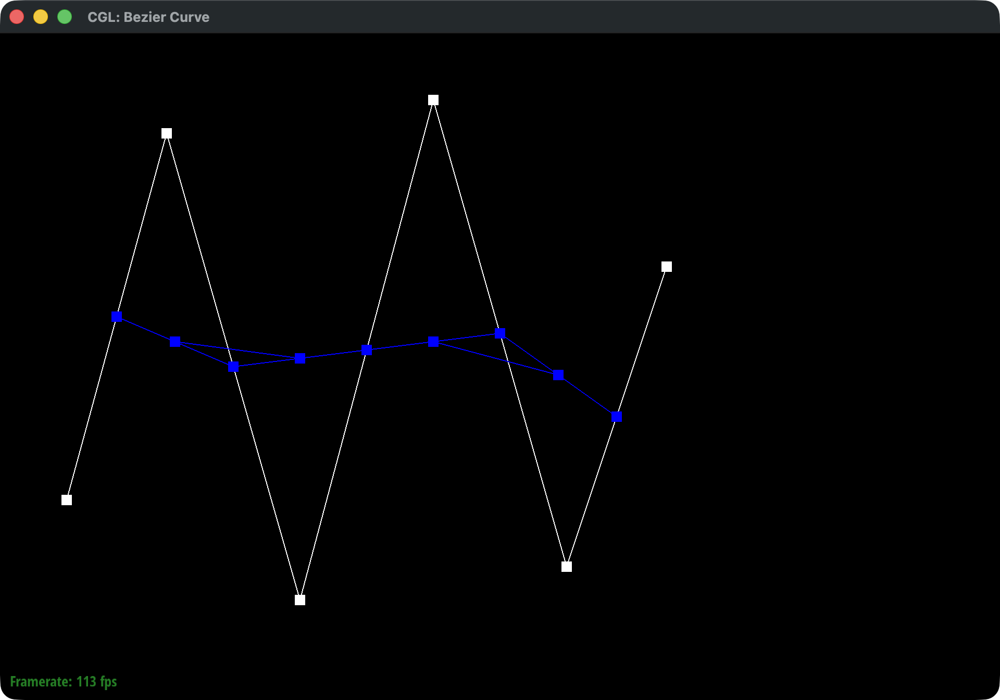 |
|
|
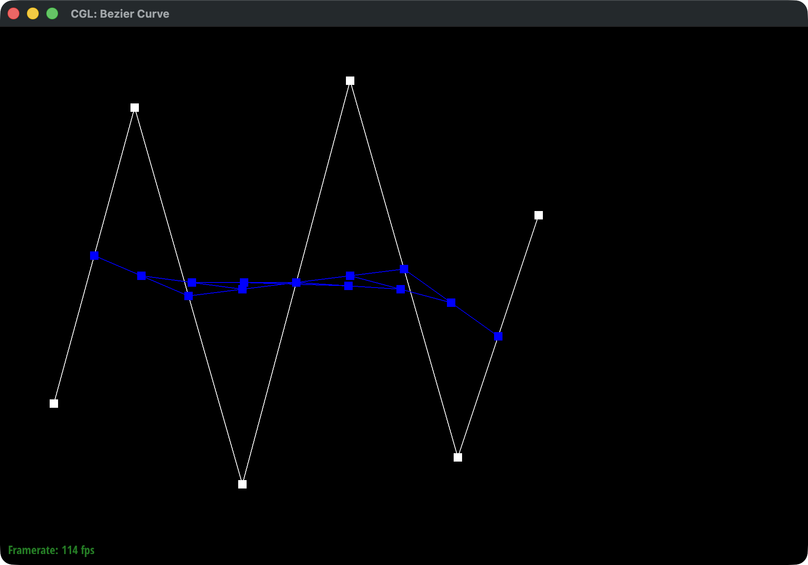 |
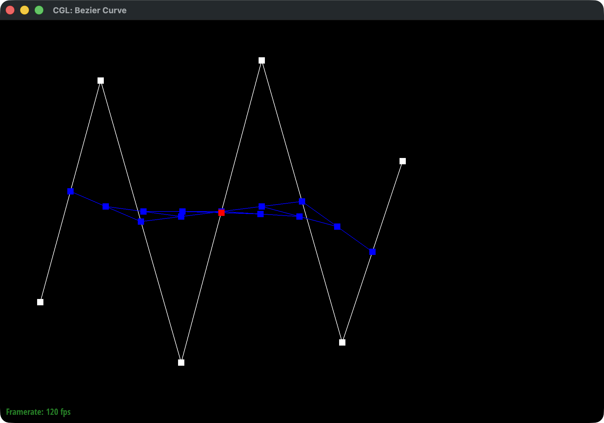 |
|
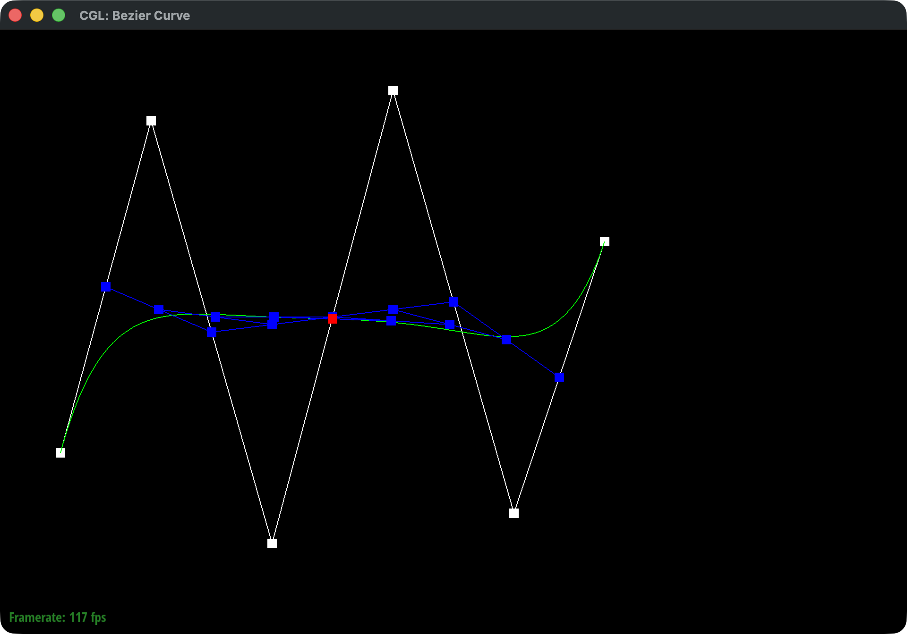 |
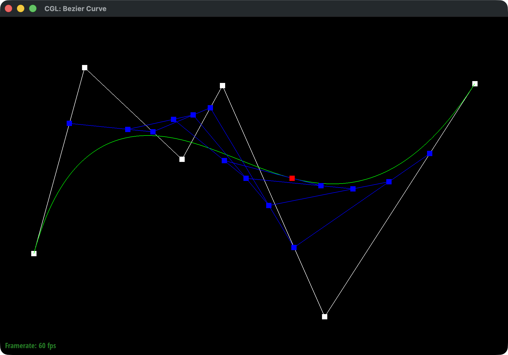 |
In the final screenshot, I dragged several of the control points to create a new curve. The curve updates to the new control polygon, and the evaluated point slides along it, still landing exactly on the green curve.
A bezier surface patch is defined by an \(n \times n \) grid of control points and two parameters \(u , v \in [0, 1] \). De Casteljau's algorithm extends to surfaces by applying the 1D algorithm separably. Each row of the control grid is treated as its own Bezier curve and evaluated at \( u \), which produces one point per row. These \( n \) points form the control points of the new "moving" Bezier curve, running in the other direction, and evaluating the curve at \(v \) gives the final point on the surface at \( (u, v) \).
I implemented this with three functions:
BezierPatch::evaluateStep: fundamentally the exact same code I implemented in part 1, just with 3D points
and \( t \) passed in as a parameter.BezierPatch::evaluate1D: fully evaluates a 1D Bezier curve by making a copy of the input points
and repeatedly calling evaluateStep until only one point remains, then returning it.BezierPatch::evaluate: calls evaluate1D on each row of
controlPoints at parameter \( u \), collects those results into a vector, and returns
evaluate1D of that vector at parameter \( v \).
For a 4×4 patch, each surface point therefore costs four 1D evaluations along the rows plus one across them,
\( 5 \times 6 = 30 \) lerps in total. The starter code samples each patch on a 16×16 grid of \( (u, v) \)
values and triangulates the results. Below is bez/teapot.bez, made of 32 bicubic patches, rendered
with my implementation. The wireframe view shows the sampled grid on each patch.
|
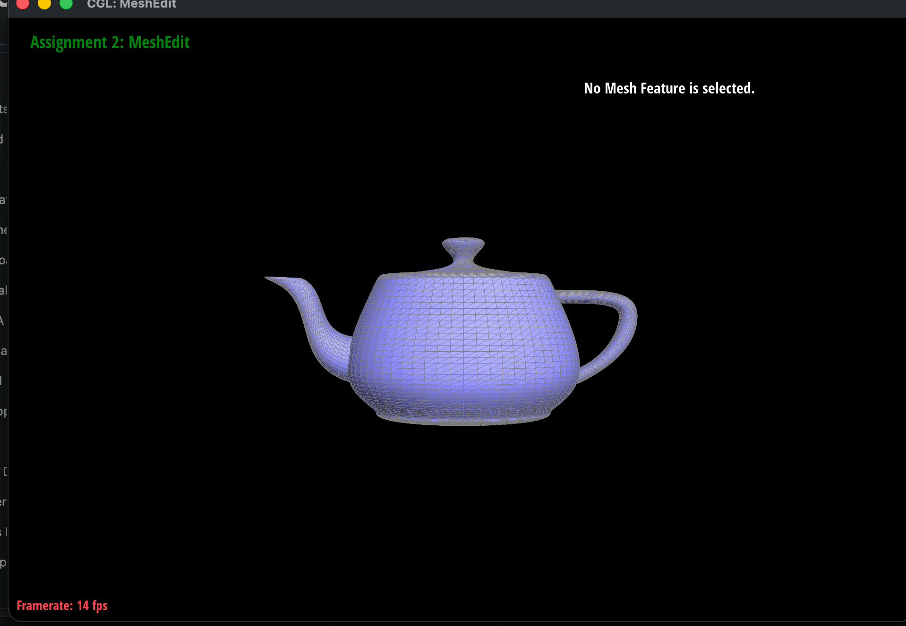 |
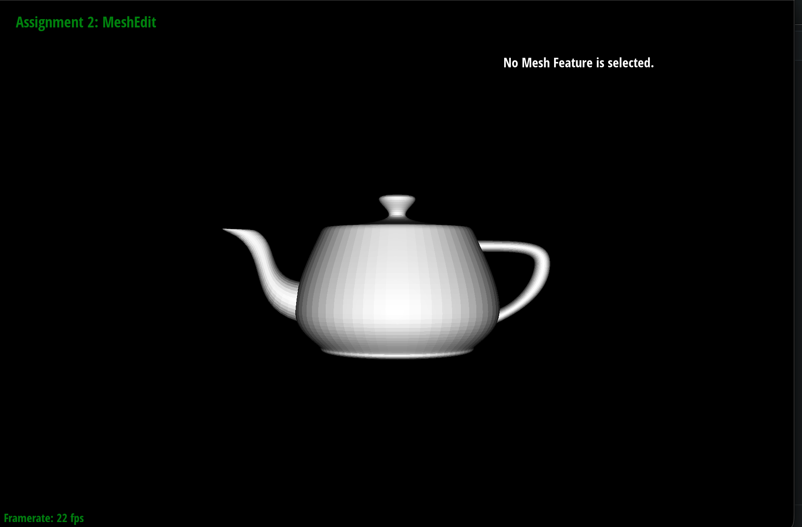 |
With the current shading, every triangle is lit using a single face normal, which leads to the brightness "jumping" at the edges of the face. Phong shading instead assigns normals to each vertex, then interpolates those normals across each triangle. A good vertex normal is the average of the normals of the faces surrounding the vertex, weighted by their areas so that large faces can have more influence than small or thin faces.
I implemented this in Vertex::normal(). Starting from the vertex's half-edge, I walk around every
face incident to the vertex using a do/while loop that steps to the next outgoing half-edge with
h->twin()->next(), stopping once I return to the starting half-edge. Because the function is
const, I use a HalfedgeCIter. For each face, I skip virtual boundary faces, which
represent holes in the mesh rather than real triangles, and otherwise read the face's three vertex positions
\( p_0, p_1, p_2 \) by following h, h->next() and
h->next()->next(), where \( p_0 \) is the vertex itself.
The key observation is that the cross product of two triangle edges already encodes both quantities I need.
\[ N = (p_1 - p_0) \times (p_2 - p_0), \qquad \| N \| = 2 \cdot \text{Area} \]
Its direction is the face normal pointing outwards, and its magnitude is
proportional to the face's area. So I sum the unnormalized cross products of all incident faces and
normalize the total once at the end. This gives the area-weighted average directly; the factor of 2 cancels
during normalization. I did't use Face::normal() as it would lose the area information
and produce unweighted averages.
The screenshots below show dae/teapot.dae from the same viewpoint. With flat shading, the
individual triangles are clearly visible as bands of constant brightness along the body and spout. With my
area-weighted vertex normals enabled, the lighting varies continuously across faces and
the teapot appears smoothly curved, even though the mesh geometry is identical.
|
|
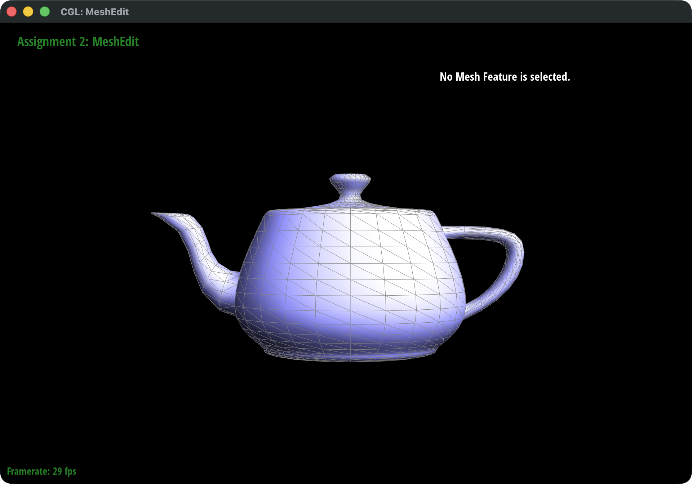 |
An edge flip takes the edge shared by two triangles \( (a, b, c) \) and \( (c, b, d) \) and replaces it with the other diagonal of the quadrilateral they form, producing triangles \( (a, d, c) \) and \( (a, b, d) \). No mesh elements are created or deleted; the flip keeps the same number of half-edges, vertices, edges and faces. If the edge lies on a boundary, the flip is skipped.
I followed the recommended approach as stated in the spec, which was to name every element first, then reassign the pointers.
I stored all the 10 half edges starting with h0 = e0->halfedge() and using next() and twin()
to find the next edge. This also gives me the four vertices, five edges and two faces. This minimizes confusion when re-wiring the pointer
references.
I then drew the mesh after the flip and wrote out a table giving each of the six interior half-edges its new
next, twin, vertex, edge and face. The flipped
edge keeps its two half-edges, which now run between \( a \) and \( d \). The four outer edges are unchanged,
but two of their interior half-edges move to the other face. Each row of the table became one
setNeighbors(...) call. Finally, I reassigned the single halfedge() pointer of every
vertex, edge and face so that each refers to a half-edge that still belongs to it after the flip. This step is
easy to miss. For example, vertex \( b \) may originally have pointed to the half-edge \( b \to c \), which
after the flip starts at \( a \); leaving that pointer unchanged would break every traversal around \( b \).
Working out the full pointer table on paper before writing any code
was the most useful step. I checked it by following each face's next cycle to make sure it closed
after exactly three half-edges, and by confirming that every half-edge's vertex was the vertex it
starts from. To test the implementation, I flipped the same edge twice to confirm it returned to its original position, flipped
several neighboring edges in a row, and then turned on smooth shading (Q). Smooth shading walks around
every vertex, so any stale vertex pointer would have shown up as broken shading or a crash.
The screenshots below show dae/teapot.dae before and after flipping five edges on the front of the
body. In the close-up, each flipped edge now connects the opposite pair of corners of its quad, and the
surrounding mesh is intact with no holes.
|
|
|
An edge split takes the edge \( (b, c) \) shared by triangles \( (a, b, c) \) and \( (c, b, d) \), inserts a new
vertex \( m \) at its midpoint, and connects \( m \) to the two opposite vertices \( a \) and \( d \). The two
triangles become four: \( (a, m, c) \), \( (m, d, c) \), \( (a, b, m) \) and \( (m, b, d) \).
Unlike a flip, this operation creates new elements, namely, one vertex, three edges, two faces and six new half edges.
HalfedgeMesh::splitEdge also ignores boundary edges and returns immediately without modifying the mesh.
I re-used some of the code from part 4, mostly just the variables where I collect the existing elements into variables.
I then use the newVertex(), newEdge(), newFace(), and newHalfedge(). To keep
things as simple as possible, I tried to reuse as many old elements as possible. Before writing the code, I drew the result
of the edge split and filled out a table listing out the next,
twin, vertex, edge and face of all 12 interior half-edges. Each row of the table
became one setNeighbors(...) call.
After rewiring the half-edges, I set the new vertex's position to the midpoint of \( b \) and \( c \), and
reassigned the halfedge() pointer of every vertex, edge and face involved. As required, the new
vertex's half-edge points along the original split edge rather than along one of the new edges.
The first problem was that pressing S did nothing, I had left the starter
code's placeholder return at the top of the function, so none of my code ever ran. The second bug was
more subtle. I had accidentally swapped the halfedge() pointers of the two new faces, so each face
pointed to a half-edge belonging to the other. After a single split the mesh looked perfectly correct, because
each face simply drew the other's triangle. The bug only appeared when I combined splits with flips, a dark
triangle showed up on the teapot. The flip correctly repointed the faces it touched, but the other mis-pointed
face still referred into the modified region, so two faces drew the same triangle and one triangle was not drawn
at all, leaving a hole through which the inside of the teapot was visible. Correcting the two face pointers fixed
it. The lesson was that an operation can look correct in isolation while still breaking the mesh's invariants,
which is why I tested by repeatedly mixing splits and flips, including splitting and flipping the newly created
edges.
The screenshots below show dae/teapot.dae after splitting three quad diagonals on the front of the
body, and then after flipping three of the newly created edges and splitting one of them again. In the close-ups,
each split adds a vertex at the edge midpoint connected to the opposite corners, and the mesh remains intact
after the combined operations. One of the flips involves an edge whose two neighboring triangles have a new
midpoint vertex on the line between them, which produces a very thin, nearly degenerate triangle; this is
expected behavior for an edge flip rather than a bug.
|
|
|
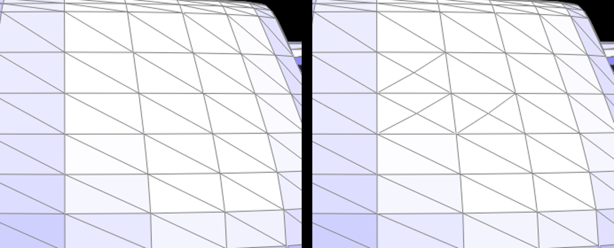
Loop subdivision does two things each time it runs. It first turns every triangle into four smaller ones (split every edge, then flip some of the new edges), and then it moves every vertex to a weighted average of its neighbors so the surface gets smoother. The new vertex on an edge with endpoints \( A, B \) and opposite vertices \( C, D \) goes to \[ \frac{3}{8}(A + B) + \frac{1}{8}(C + D), \] and an old vertex with degree \( n \) moves to \[ (1 - n u)\,\text{original_position} + u \cdot \text{original_neighbor_position_sum}, \qquad u = \begin{cases} 3/16 & n = 3 \\ 3/(8n) & \text{otherwise.} \end{cases} \]
I wrote MeshResampler::upsample as five loops, following the steps in the starter code.
twin()->next() (same idea as Part 3), and save the new position in
Vertex::newPosition.Edge::newPosition. The two opposite vertices are two next() steps into each of
the edge's faces, which is the same way I found \( a \) and \( d \) in Parts 4 and 5.splitEdge adds its new edges to the end of the edge list,
so if I just looped until the end I would keep splitting edges I had just made. To avoid that, I save
the number of edges before the loop and only split that many. After each split I mark the new vertex as
new, give it the position I saved on the edge, and set isNew on the four edges around it.
My splitEdge points the new vertex's half-edge along the original edge, so going around the
vertex the edges always come in the order: half of the old edge, new edge, other half, new edge.newPosition into position for every vertex.
Steps 1 and 2 only write to newPosition, never to position, so all of the
averaging is done with the original mesh, which is what the formulas assume.
Debugging. I caught two bugs by going over the code before running it. The first was that I had
written int u = 3/16;. Integer division made that 0, so the old vertices would never have
moved at all. I changed u to a double and used 3.0 and
8.0, and did the same for the \( 3/8 \) and \( 1/8 \) weights. The second was in step 3: I only
set the flags on three of the four edges around each new vertex, so one of the new edges never got
isNew = true and might not have been flipped in step 4. Adding the missing line fixed it. I
also first set the isNew flags inside splitEdge, but moved that into
upsample so that everything about subdivision is in one place.
Below is dae/cube.dae after zero to four rounds of subdivision. It gets smoother every time
and the triangles stay nicely shaped, but after a few rounds it's clearly lopsided instead of symmetric.
I look at why further down.
|
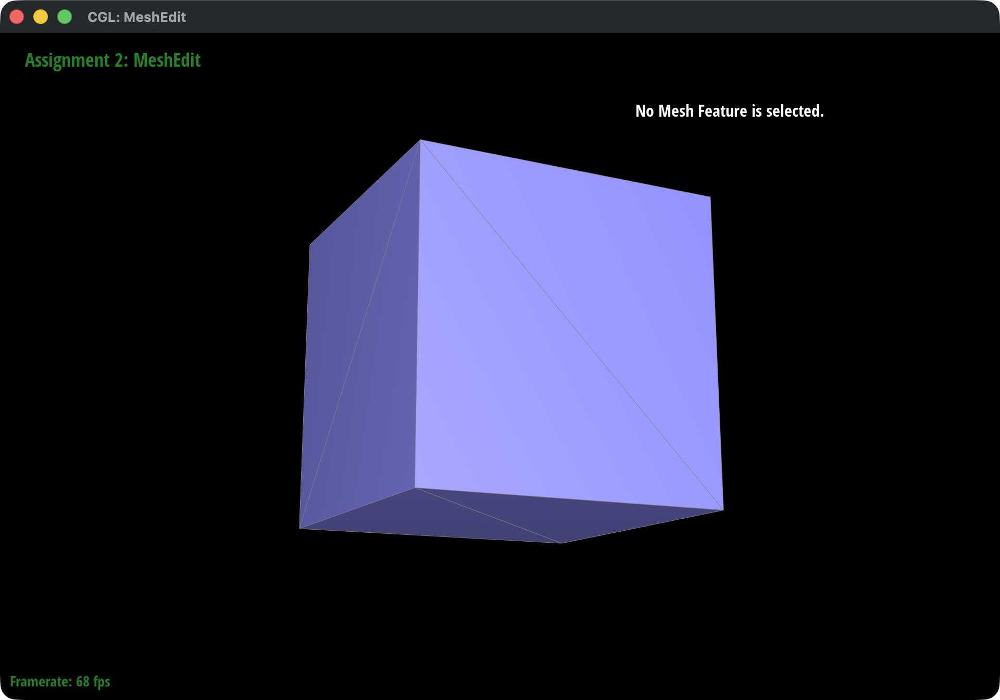 |
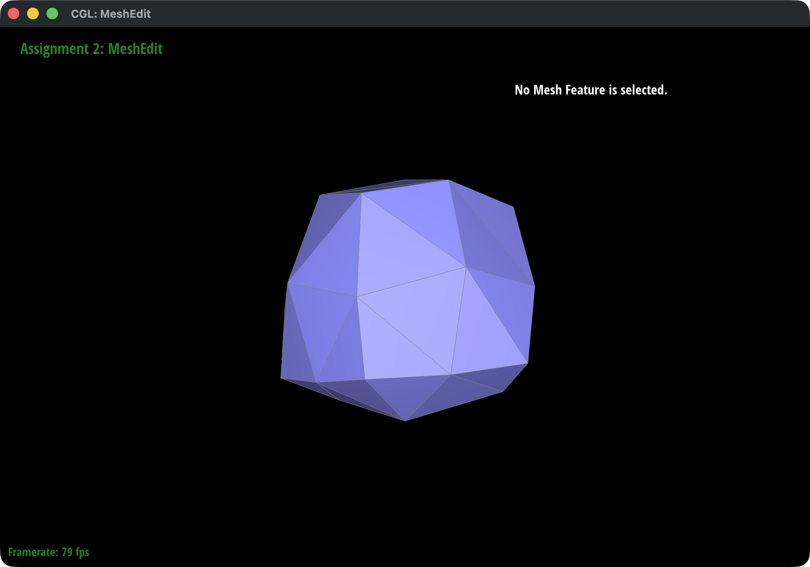 |
|
|
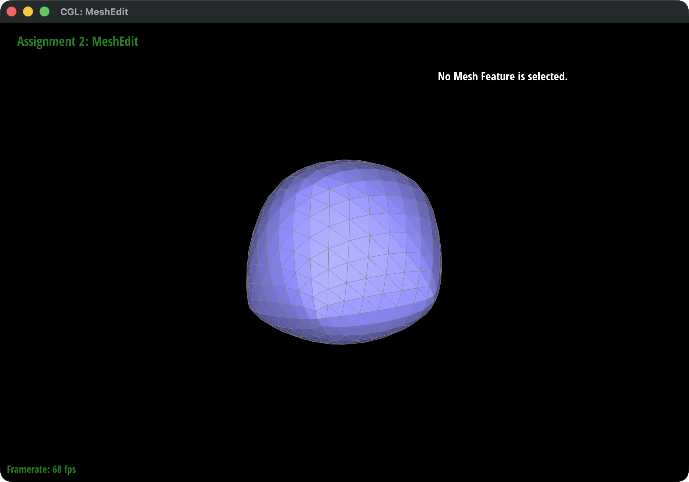 |
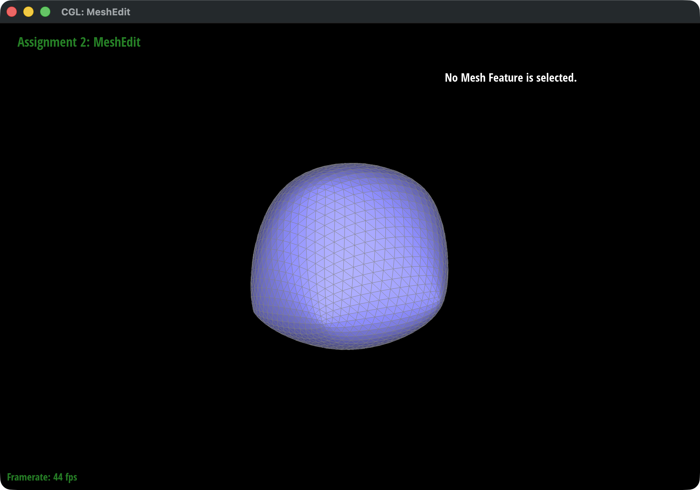 |
Sharp corners and edges. Subdivision rounds off sharp corners and edges, because every vertex gets pulled toward the average of its neighbors. A cube corner only has a few big faces around it, so it gets averaged over a large area and ends up as a smooth bump. Splitting some edges near a corner first adds vertices close to it, so the averaging happens over a smaller area and more of the corner survives. To try this, I split the three edges that meet at the top-front corner of the cube at their midpoints and then at their quarter points, and subdivided four times. That corner stayed noticeably more pointed than on the normal cube. The downside was that the splits also made long, thin triangles stretching from the new vertices to the far corners of each face, and subdivision turned those into dents and folds. So pre-splitting does help keep things sharp, but you have to choose the splits carefully so the triangles stay reasonably shaped, or you just get different artifacts.
Why the cube becomes asymmetric. Each square face of dae/cube.dae is made of two
triangles split by one diagonal. Some corners of the cube touch more of these diagonals than others, so
the corners don't all have the same degree. The Loop weights depend on degree, so different corners get
averaged differently, and the lopsidedness builds up with every round. To fix it, I split the diagonal on
all six faces before subdividing. After that, every face is four triangles around a center vertex, every
original corner has the same degree (three cube edges plus three edges to face centers), and every face
center has the same degree too. Since the starting mesh is symmetric, the subdivided result is a symmetric
rounded cube (bottom row of the last figure).
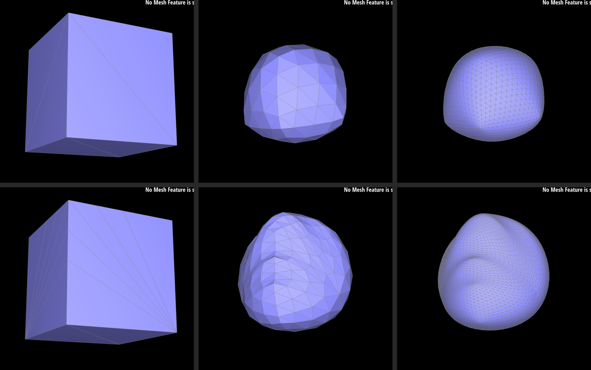
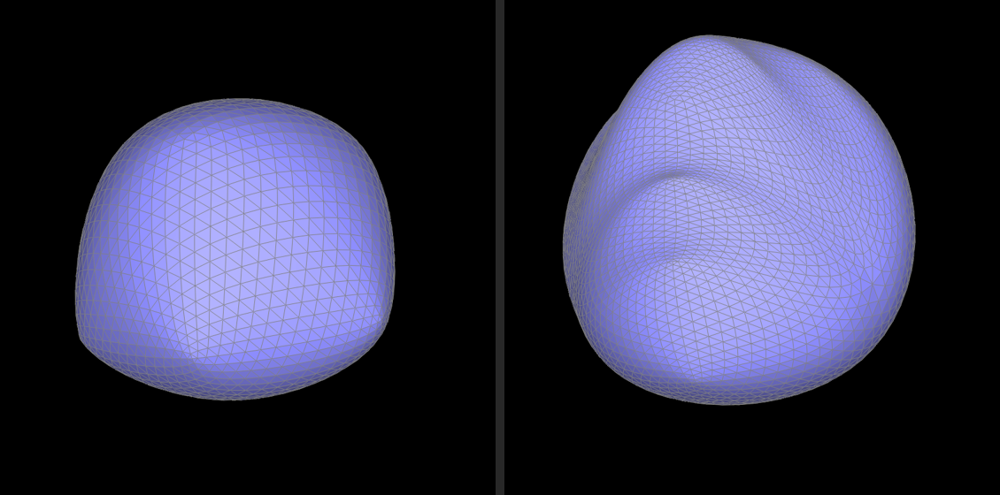
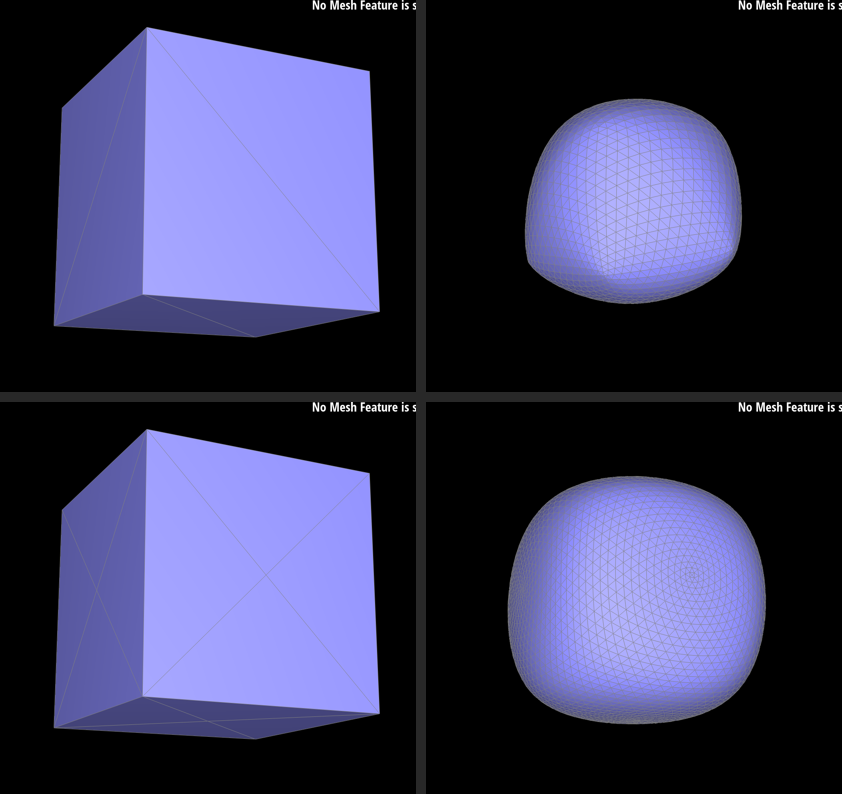